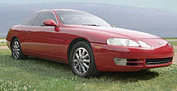
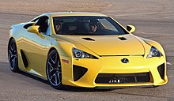

Lexus
 this is lexus logo
this is lexus logo
History
The LS 400 was praised for its quietness, well-appointed and ergonomic interior, engine performance, build quality, aerodynamics, fuel economy and value.[22][37] However, it was criticized by some automobile columnists for derivative styling and a suspension regarded as too compromising of handling for ride comfort.[22][38] In some markets it was priced against mid-size, six-cylinder Mercedes-Benz and BMW models.[39] It was rated by Car and Driver magazine as better than the higher-priced Mercedes-Benz 420 SEL and BMW 735i in terms of ride, handling and performance.[40] The LS 400 also won motoring awards from automotive publications including Automobile Magazine and Wheels Magazine.[41][42] Lexus quickly established customer loyalty and its debut was generally regarded as a shock to existing luxury marques. BMW's and Mercedes-Benz's U.S. sales figures dropped 29 percent and 19 percent, respectively, with BMW executives accusing Lexus of dumping in that market, while 35 percent of Lexus buyers traded in a Lincoln or Cadillac.[40] In December 1989, Lexus initiated a voluntary recall of all 8,000 LS 400s based upon two customer complaints over defective wiring and an overheated brake light.[40] A 20-day operation to replace the parts on affected vehicles included technicians to pick up, repair and return cars to customers free of charge, and also flying personnel and renting garage space for owners in remote locations.[40] This response was covered in media publications and helped establish the marque's early reputation for customer service.[43][44] By the end of 1989, a total of 16,392 LS 400 and ES 250 sedans were sold in the four months following the U.S. launch.[45] Although sales had begun at a slower pace than expected, the final tally matched the division's target of 16,000 units for that year.[46] Following initial models, plans called for the addition of a sports coupe along with a redesigned ES sedan.[47]
1990s: Growth and expansion Front quarter view of an SUV. 1998 RX 300, first Lexus crossover SUV In 1990, during its first full year of sales, Lexus sold 63,594 LS 400 and ES 250 sedans in the U.S.,[48] the majority being the LS model.[48] That year, Lexus also began limited exports to the United Kingdom, Switzerland, Canada and Australia. [22][49] In 1991, Lexus launched its first sports coupe, the SC 400, which shared the LS 400s V8 engine and rear-wheel drive design.[47] This was followed by the second generation ES 300 sedan, which succeeded the ES 250 and became Lexus' top seller.[47] At the conclusion of 1991, Lexus had become the top-selling premium car import in the U.S.,[50][51] with sales reaching 71,206 vehicles.[48] That year, Lexus ranked highest in J.D. Power and Associates' studies on initial vehicle quality, customer satisfaction and sales satisfaction for the first time.[52] The marque also began increasing U.S. model prices past those of comparable American premium makes, but still below high-end European models.[51] By 1992, the LS 400's base price had risen 18 percent.[53] In 1993, Lexus launched the mid-size GS 300 sports sedan, based on the Toyota Aristo using the Toyota "S" platform from the Toyota Crown, which had sold for two years prior in Japan.[47] The GS 300 was priced below the LS 400 in the marque's lineup.[54] That same year, Lexus became one of the first marques to debut a certified pre-owned program, with the aim of improving trade-in model values.[55] The marque introduced the second generation LS 400 in 1994.[56] In May 1995, sales were threatened by the U.S. government's proposal of 100 percent tariffs on upscale Japanese cars in response to the widening U.S.-Japan trade deficit. [57] SUVs were exempt from the proposed sanctions.[58] Normal sales operations resumed by late 1995 when the Japanese auto manufacturers collectively agreed to greater American investments and the tariffs were not enacted.[57] Front quarter view of a sedan. ES 300 was the best-selling Lexus sedan in the 1990s. In 1996, Lexus debuted its first sport utility vehicle, the LX 450,[59] followed by the third generation ES 300 sedan, and the second generation GS 300 and GS 400 sedans in 1997. The marque's plans for developing an SUV model had accelerated during the U.S.-Japan tariff discussions of 1995.[58] Lexus added the first luxury-branded crossover SUV, the RX 300 in 1998. The RX crossover targeted suburban buyers who desired an upmarket SUV but did not need the LX's off-road capability.[60] It was particularly successful, eventually becoming the marque's top-selling model ahead of the ES sedan.[60] The same year, Lexus made its debut in South America's most populous country when it launched sales in Brazil.[61][62] In 1999, the IS was introduced, an entry-level sport sedan. Lexus also recorded its 1 millionth vehicle sold in the U.S. market,[50] being ranked as the top-selling premium car maker in the U.S. overall.[60]

n July 2000, Lexus introduced the IS 300 in North America, following global launch in 1999 (as the IS 200) and the third generation LS 430. In 2001, the first convertible was introduced, as well as the SC 430 and a redesigned ES 300.[63] The GX 470 mid-size SUV debuted in 2002, followed by the second generation RX 330 in 2003.[64] The following year, Lexus recorded its 2 millionth U.S. vehicle sale,[65][66] and the first luxury-branded production hybrid SUV, the RX 400h.[67] This vehicle used Toyota's Hybrid Synergy Drive system that combined gasoline and electric motors.[68] In 2005, Lexus completed an organizational separation from parent company Toyota,[69] with dedicated design, engineering, training, and manufacturing centers working exclusively for the division.[70][71] This effort coincided with Lexus' launch in its home market of Japan and an expanded global launch of the brand in markets such as China.[71][72] Executives aimed to increase Lexus sales outside of its largest market in the U.S.[71][73] To accompany this expansion, next generation Lexus vehicles were redesigned as "global models" for international release.[74] In the European market, where Lexus had long faced struggling sales owing to low brand recognition, few dedicated dealerships, and 1990s import quotas,[75][76] the marque announced plans to introduce hybrid and diesel powertrains,[77] increase the number of Lexus dealerships, and expand operations in emerging markets such as Russia.[78][79] Front quarter view of a sedan. 2006 Lexus IS, second generation with F marque variant in 2007 Lexus' arrival in the Japanese market in July 2005 marked the first introduction of a Japanese premium car marque in the domestic market.[9] New generation LS, IS, ES, GS, and RX models subsequently became available in Japan along with the SC 430, ending domestic sales of Toyota-branded models under the Celsior, Altezza, Windom, == Aristo, Harrier, and Soarer nameplates, respectively. The Altezza and Aristo were previously exclusive to Japanese Toyota retail sales channels called Toyota Vista Store, the Windom was exclusive to Toyota Corolla Store, the Celsior and Harrier were exclusive to Toyopet Store, and the Soarer was previously available at both Toyota Store and Toyopet Store locations.[80][81] Lexus models sold in Japan featured higher specifications and a price premium compared with their discontinued Toyota counterparts.[80] Sales for the first half-year were slower than expected,[82] affected by the contraction of the domestic auto market and price increases,[83] but improved in subsequent months with an expanded lineup.[83][84] Through the mid-2000s, Lexus experienced sales successes in South Korea and Taiwan, becoming the top-selling import make in both markets in 2005;[85][86] the marque also sold well in the Middl e East, where it ranked first or second among rivals in multiple countries,[87] and in Australia, where Lexus reached third in luxury car sales in 2006.[88][89] Division executives in 2006 announced an expansion goal from 68 countries to 76 worldwide by 2010.[90] By the end of the decade, this expansion resulted in official launches in Malaysia and South Africa in 2006,[91][92] Indonesia in 2007,[93] Chile in 2008, [94][95] and the Philippines in 2009.[96] Hybrids and F models In 2006, Lexus began sales of the GS 450h, a V6 hybrid performance sedan,[97] and launched the fourth generation LS line, comprising both standard- and long-wheelbase V8 (LS 460 and LS 460 L) and hybrid (LS 600h and LS 600h L) versions.[98] The fifth generation ES 350 also debuted in the same year. The LS 600h L subsequently went on sale as the most expensive sedan ever produced in Japan.[99] By the end of 2006, Lexus' annual sales had reached 475,000 vehicles worldwide.[100] In January 2007, Lexus announced a new F marque performance division, which would produce racing-inspired versions of its performance models. The IS F, made its debut at the 2007 North American International Auto Show,[101] accompanied by a concept car, the LF-A. Front quarter view of a sedan. 2006 GS 450h, first rear-wheel-drive hybrid In October 2007, Lexus entered the Specialty Equipment Market Association show in the U.S. for the first time with the IS F, and announced its F-Sport performance trim level and factory-sanctioned accessory line.[102] Increased emphasis on sporty models was an effort to target rivals from Mercedes-Benz's AMG and BMW's M divisions.[101][103] Models such as the SC 400 and GS 400 had received favorable reactions from sport luxury buyers,[104] most Lexus models had been characterized as favoring comfort over sporty road feel and handling, compared with European rivals.[105] By the end of 2007, Lexus annual worldwide sales had surpassed 500,000 vehicles,[106] and the marque ranked as the top-selling premium import in China for the first time.[107] The largest sales markets in order of size for 2007 were the U.S., Japan, the UK, China, Canada, and Russia.[100][108] In 2008, amidst the late-2000s recession and a weakened world car market, global sales fell 16 percent to 435,000,[109][110][111] with declines in markets such as the U.S. and Europe where deliveries fell by 21 percent and 27.5 percent, respectively.[112][113] In 2009, the marque launched the HS 250h,[114] a dedicated hybrid sedan for North America and Japan, the RX 450h, the second generation hybrid SUV replacing the earlier RX 400h, and later that year debuted the US$375,000 production LFA exotic coupe.[115] In late 2009, citing higher sales of hybrid models over their petrol counterparts,[116][117] Lexus announced plans to become a hybrid-only marque in Europe.[118] By the end of the decade, Lexus ranked as the fourth-largest premium car make in the world by volume,[119] and was the number one selling premium car marque in the U.S. for 10 consecutive years.[111][119][120] 2010s–2020s: Recent developments Front quarter view of a coupe. 2012 Lexus LFA In 2010, Lexus underwent a gradual sales recovery in North America and Asia as the marque focused on adding hybrids and new model derivatives.[87] Sales in the U.S. held steady despite the 2009–2010 Toyota vehicle recalls, several of which included Lexus models.[121] The ES 350 and certain IS models were affected by a recall for potentially jamming floor mats,[121] while parent company Toyota bore the brunt of negative publicity amid investigations over its series of product recalls and problem rates per-vehicle.[121][122] The redesigned GX 460 was also voluntarily recalled in April 2010 for a software update, one week after Consumer Reports issued a recommendation not to buy the SUV, citing a possible rollover risk following the slow stability control response to a high-speed emergency turn.[123] Although the publication knew of no repor ted incidents, the GX 460 received updated stability control software.[123] 